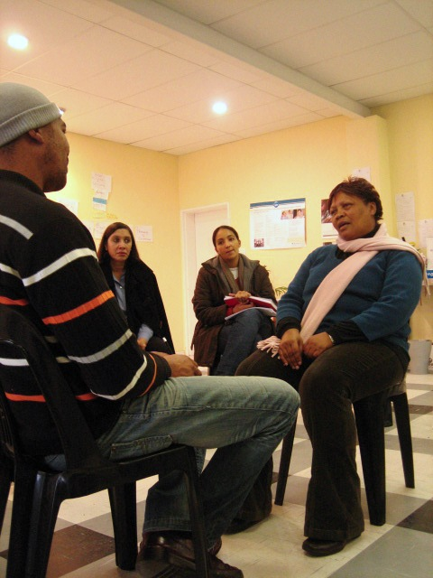
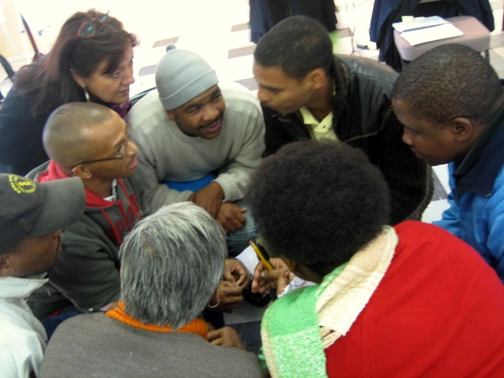

پذيرش > تریبون > مقالات > موزاییکِ ترمیم یافته؛ علیه خشونت بر زنان در کیپ تاون- آفریقای جنوبی


 موزاییکِ ترمیم یافته؛ علیه خشونت بر زنان در کیپ تاون- آفریقای جنوبی موزاییکِ ترمیم یافته؛ علیه خشونت بر زنان در کیپ تاون- آفریقای جنوبی
18 مرداد 1389 - لیلا راد - نسخه قابل چاپ
آفریقای جنوبی کشوری است با قانون اساسی بسیار محکم و حمایت کننده از همه ی اقشار جامعه و در عین حال دارای بالاترین آمار خشونت جنسی، شامل خشونت خانگی و تجاوز، در دنیا. این آمار درحالی است که بسیاری از موارد خشونت هرگز گزارش نمی شود. خشونت علیه زنان یکی از برجسته ترین ویژگی های یادگار حکومت آپارتاید سابق است.
موزاییکِ شکستنی
زنانی که مورد خشونت واقع می شوند، مانند جسمی شکستنی، می شکنند. تکه های شکسته شده باید دوباره کنار هم قرار بگیرد. مثل یک موزاییک.
موزاییک، سازمانی غیر انتفاعی در کیپ تاونِ آفریقای جنوبی است که در زمینه ی تواناسازی افراد مورد خشونت واقع شده، فعالیت می کند. که در این زمینه از همکاری دولت و نیز برخی از مراجع دیگر در سطح جامعه بهره می برد. هدف آن ها جامعه ای عاری از خشونت است. خدمات ارائه شونده در این سازمان شامل: حمایت قانونی، خدمات اجتماعی، مهارت های آموزشی و برنامه ی سلامت جنسی برای هم زنان و هم مردان است.
حمایت قانونی
بسیاری از کسانی که مورد خشونت واقع می شوند (اغلب زنان) در این باره سکوت می کنند. عده ی کمی از حق قانونی خود برای شکایت استفاده می کنند. و عده ی کمتری در این زمینه موفق می شوند. دلیل آن عدم آگاهی از روند دادرسی به شکایات است. بسیاری از آن ها حتی سواد پر کردن فرم شکایت خود را نیز ندارند. به همین دلیل موزاییک، مشاوران حقوقی خود را برای کمک به این افراد در دادگاه ها مستقر کرده است.
مراجعه کنندگان می توانند در زمینه ی: مشاوره ی بحران، آگاهی درباره ی خشونت خانگی و سوءاستفاده و شیوه ی طرح شکایت و روند دادرسی، از کمک مشاوران بهره مند شوند.
خدمات اجتماعی
برنامه های این بخش به گونه ای طرح ریزی شده است که قابل دسترسی، بدون هزینه و متناسب با فرهنگ جامعه باشد. این خدمات عبارتند از:
 آگاهی عمومی از خشونت خانگی و سواستفاده آگاهی عمومی از خشونت خانگی و سواستفاده
مشاوره ی فردی، زوجین و خانوادگی برای خشونت کننده (ها)
مشاوره ی حساسیتِ جنسیتی برای قربانی و خشونت کننده
گروه های حمایت کننده ی متمرکز بر سواستفاده و ایدز
کارگاه های خشونت جنسیتی و سایر موضوع های مرتبط
برنامه ی ویژه ی جوانان و مردان
آموزش حقوق شهروندی و قانونی
و همینطور سایر خدمات شامل همراهی مراجعه کنندگان به ایستگاه پلیس، کمک در طرح شکایت و تهیه ی غذا و لباس در صورت نیاز و ...

مهارت های آموزشی
مهارت های آموزشی کاربردی برای افراد مورد خشونت واقع شده و به منظورظرفیت سازی در آنان جهت ایستادگی و مطالبه ی حقوق انسانی خود، برنامه ریزی شده است. به کمک این مهارت ها آن ها می توانند شاغل شوند و کسب درآمد کنند. در این دوره های آموزشی، هر فرد مورد خشونت واقع شده، در عین حال که نیازمند کمک و یاری است، خود یاری دهنده ی سایر افراد محسوب می گردد. علاوه بر آن، سایر ان جی اوها نیز می توانند از برخی دوره های مرتبط بهره مند گردند.
این دوره ها شامل موارد زیر هستند:
پرورش گیاه/ کشاورزی خانگی
آشپزی
تربیت مشاور
آموزش مددیاری اجتماعی
آموزش بهداشتیار در زمینه ی حقوق و سلامت جنسی
برنامه ی سلامت جنسی
توجه به سلامت جنسی فرد مورد خشونت یا سواستفاده واقع شده، بخش مهمی از روند بهبود وی است. به همین منظور موزاییک، 5 سال پیش دو کلینیک تخصصی برای رسیدگی به وضعیت سلامت جنسی مراجعه کنندگان تاسیس کرد. خدمات این کلینیک ها بدون هزینه در دسترس مراجعین قرار می گیرد.
این خدمات عبارتند از:
تست حاملگی
تست پاپ اسمیر
معاینه ی پزشکی در صورت تجاوز و صدور گواهی برای ارائه به دادگاه
سقط جنین در سه ماهه ی اول، همراه با مشاوره ی قبل و بعد از عمل
تست HIV همراه با مشاوره
پیشگیری از بارداری به روش اضطراری
مامو گرافی در صورت نیاز

موزاییکِ نشکن
در کنار همه ی این خدمات، تاکید ویژه ی موزاییک بر مشاوره است. جلسات ویژه ی مشاوره برای زنان و مردان از این جهت برنامه ریزی شده است تا آن ها را با مفهوم خشونت آشنا کند. بسیاری از زنان هرگز فکر نمی کنند مورد خشونت واقع می شوند بلکه رفتاری که با آن ها می شود را کاملا طبیعی و حق همسر خود قلمداد می کنند. و یا تنها آزار فیزیکی را خشونت می دانند. در کلاس های مشاوره به این زنان حقوق انسانی شان یادآوری می شود و ازآن ها خواسته می شود با سکوت در مقابل خشونت به تداوم آن دامن نزنند.
مشاوره ی بعدی برای مردان است. عاملان خشونت. خشونت در این کشور، ریشه ای دیرینه دارد. مهم ترین دلایل آن فقر و مشکلات فرهنگی است. مردان قادر به تامین مخارج خانواده ی خود نیستند (وظیفه ای که به طور سنتی از مردان انتظار می رود) و این امر توانایی آنان را نزد خانواده شان تزلزل می دهد. مردان به جبران این کمبود دست به خشونت می زنند. جلسات مشاوره ی مردان شامل آموزش صحیح رفتاری است. مشاوران همینطور سعی می کنند دانش عمومی مردان را افزایش دهند و با آگاه کردن آن ها از شرایط اجتماعی به آن ها کمک کنند تا شرایط خود را بهتر درک کنند. در این جلسات، مردان خشونت کننده را نه مجرم، بلکه بیمارانی نیازمند همیاری و درمان در نظر می گیرند.
با این حال و علی رغم قوانین موجودِ محدود کننده ی خشونت، این امر به طور مداوم در جامعه رخ می دهد. به نظر می رسد تا هدف این ان جی او، جامعه ای عاری از خشونت، راهی طولانی پیش رو باشد. اما شاید مهم تر از آن مسیری است که در آن سعی می شود از زنان مراجعه کننده، زنانی قوی ساخت که هرگز، نشکنند.
ارسال به
بالاترین
،
توییتر
،
فریندفید
،
فیسبوک
در همين بخش :
 دهمین دورۀ مراسم تندیس صدیقه دولت آبادی ۱۳۹۲ دهمین دورۀ مراسم تندیس صدیقه دولت آبادی ۱۳۹۲
کارت پستالهایی به بهانهی هشت مارس و به یاد همهی مبارزین راه برابری
بیانیه بیش از 350 تن از مدافعان حقوق زنان به مناسبت روز جهانی زن؛ زنان هر روز فرودستتر میشوند
لباسی که برای تن ما دوخته اند! /اعظم بهرامی
چالشها و چشمانداز فعالیت مدنی زنان
ديگر بخش ها :
طرح یک میلیون امضا
|
مقالات
|
سایت نوشته ها
|
اخبار
|
گزارش كمپين
|
گفت و گو
|
علیه سکوت
|
كوچه به كوچه
|
نامه های شما
|
گزارش ویژه
|
گفتگو با اعضا
|
ویژه سالگرد کمپین
|
تصویر برابری
|
دل آرام علی
|
تریبون
|
مقالات
|
تاریخ شفاهی
|
خارج از چارچوب
|
کتابخانه
|
درباره کمپین
|
کمپین در شهرها
|
کمپین در بند
|
صدای تغییر
|
ویژه 22 خرداد
|
لایحه حمایت از خانواده
|
گالری
|
عشا مومنی
|
امیر یعقوبعلی
|
خدیجه مقدم
|
راحله عسگری زاده و نسیم خسروی
|
پروین اردلان،جلوه جواهری، مریم حسین خواه، ناهید کشاورز
|
زینب پیغمبرزاده
|
سعیده امین، سارا ایمانیان، محبوبه حسین زاده، ناهید کشاورز و همایون نامی
|
احترام شادفر
|
نسیم سرابندی زاده،فاطمه دهدشتی
|
وبلاگ مهمان
|
پرونده خرم آباد
|
دستگیری ها
|
مریم مالک
|
پرستو اللهیاری
|
مهرنوش اعتمادی
|
سمیه رشیدی
|
Other Languages
|
همراهان
|
«فراخوان کمپین ده روز با بهاره هدایت»
| English
|